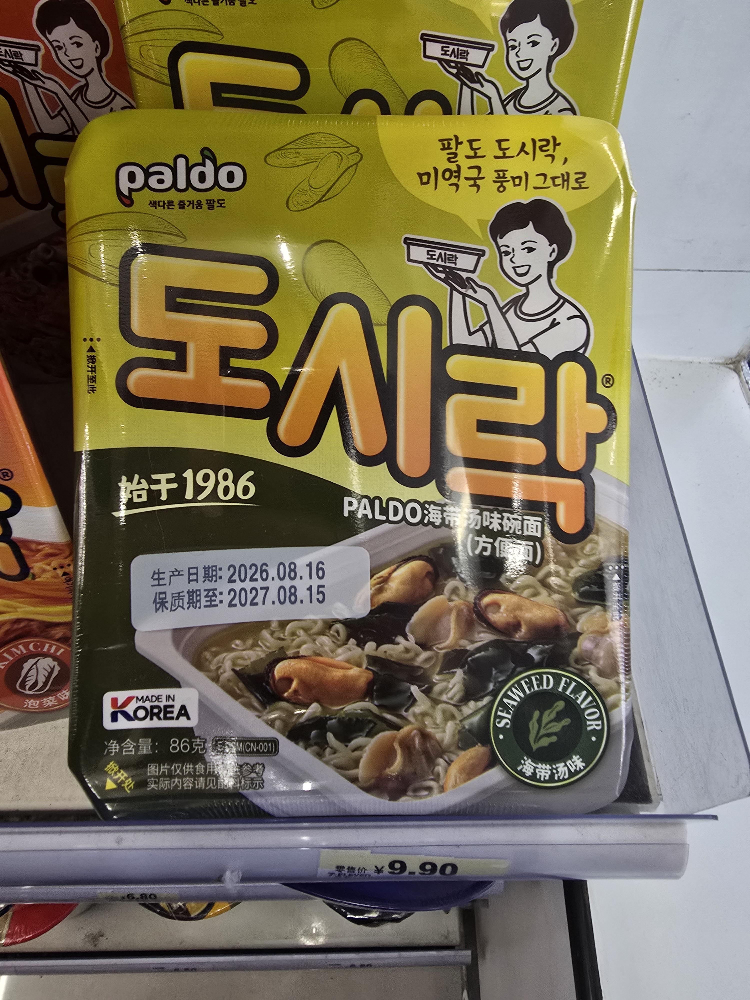

중국 출장왔는데 미역국 도시락팜
ㅁㅊ 개맛있겠다

한국에도 팔아줘
중국 출장왔는데 미역국 도시락팜
ㅁㅊ 개맛있겠다

한국에도 팔아줘
갈!!!!컵라면과 봉지는 결이 다른 음식이라고!!
이거보고 안심하고 삼양컵육개장 뜯었다

이전에 오뚜긴가 어디서 미역국라면 팔았었는데 요즘은 안보이는게 인기가 없었나봐
아니야 아직도 팔아 맛도좋고, 애들먹이기 좋아
오... 아직도 파는구나
우리 딸 최애임ㅋㅋㅋ
겁나 잘팔림 ㅋ
미역국에 홍합? 소고기아니면 취급안해요
아주머니 해외에서도 열심히 도시락 들고 계시네
중국이 조리예 사기 더 심하구나 ㄷㄷ
으 바다찌꺼기가 들어있잖아
그냥 마트서 건조"커트"미역 사다가 대충 1인분 한웅큼 정도 넣어줘
러시아 시장은 팔도가 잡고있긴해 ㅋㅋㅋ
홍합미역국이라니 상상이가면서도 궁금한데
조합미쳣네
홍합미역국 극혐...
함 직접 무 보고 리뷰를 하지그래
후기점 ㅋㅋ🤤
소고기미역국이 아니라 홍합미역국이네 그럼됐어
와 저아줌마 팔힘 장난아님
오뚜기였나? 미역국라면 한때 진짜 자주먹었는데
봉지 있어요..